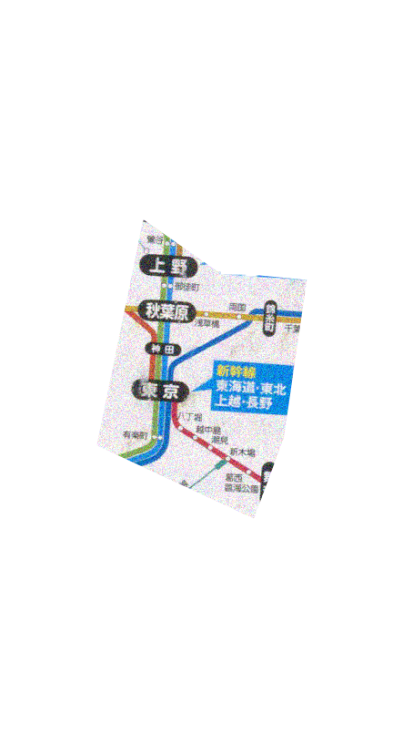
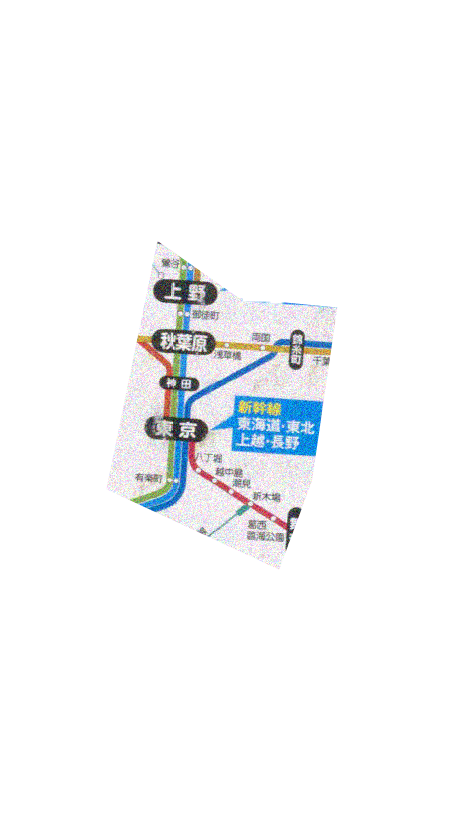

Since 1869, Tokyo has been a metropolitan that has been developed as the capital city of Japan, also as a runner and creator of the world in the next era. According to an American political magazine Foreign Policy, Tokyo ranked the third in the whole world for Global Power City Index in August 2010, followed by New York and London. Tokyo, this busy city with so many opportunities, is also my precious hometown. I see the metropolis as a collection of suburb areas and developed areas, such as Shinjuku and Shibuya, always evolving to the future.
 
